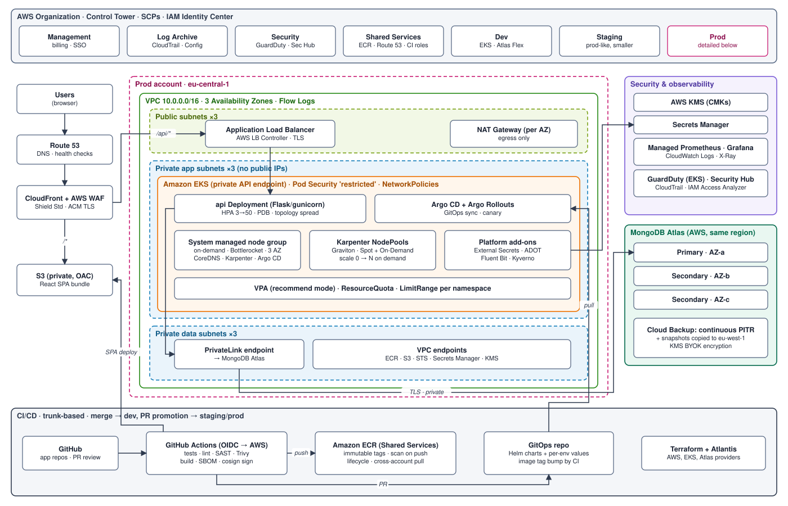

Company Inc. — Cloud Architecture Design
Web application (React SPA + Python/Flask REST API + MongoDB) on AWS with Amazon EKS · v1.0
Summary. The platform runs on AWS. It uses a multi-account AWS Organization, one VPC per environment spread over
three AZs with no public compute, and Amazon EKS with Karpenter for the API. The React SPA is served from S3
behind CloudFront and WAF. The database is MongoDB Atlas on AWS, reached over PrivateLink. All infrastructure is
defined in Terraform and deployed through GitHub Actions and Argo CD (GitOps). Day one costs stay small: a few nodes and
one M10 database cluster. Every layer scales horizontally to millions of users without a redesign.
1. Cloud environment structure
Provider: AWS. It has the deepest managed-service catalogue and the largest hiring pool. Mature multi-account
governance (Organizations, Control Tower, SCPs) works out of the box. EKS, Karpenter and the AWS Load Balancer
Controller are the most widely documented Kubernetes stack, which matters for a team with little cloud experience.
MongoDB Atlas runs natively on AWS and can be bought through AWS Marketplace, so billing stays in one place. GCP with
GKE Autopilot is a credible alternative with less to operate, but the AWS ecosystem and talent pool tipped the
decision.
| Account (OU) | Purpose |
|---|
| Management | Organizations, consolidated billing, budgets, IAM Identity Center (SSO). No workloads. |
| Log Archive (Security) | Immutable org-wide CloudTrail, AWS Config and VPC Flow Logs (S3 Object Lock). |
| Security / Audit (Security) | Delegated admin for GuardDuty, Security Hub, IAM Access Analyzer; break-glass, read-only audit roles. |
| Shared Services (Infra) | ECR (single source of images), Route 53 public zones, CI/CD OIDC roles, Terraform state. |
| Dev · Staging · Prod (Workloads) | One account per environment, each with its own VPC, EKS cluster and Atlas project. Staging mirrors prod at a smaller size. |
Separate accounts give a hard blast-radius and IAM boundary, which matters because user data is sensitive. They also give
per-environment cost visibility without tagging discipline. SCPs enforce guardrails: approved regions only, no disabling of
CloudTrail or GuardDuty, no public S3, no IAM users. Engineers sign in through SSO with time-bound roles: full access in
dev, read-only plus break-glass in prod.
2. Network design
- One VPC per environment with non-overlapping CIDRs (e.g. prod
10.0.0.0/16), across 3 AZs,
with three subnet tiers per AZ:
- Public: ALB and NAT Gateways only.
- Private app: EKS nodes and pods, no public IPs. Large /19s for the VPC CNI with prefix delegation.
- Private data: PrivateLink endpoint to Atlas and interface endpoints.
- Ingress path: Route 53 → CloudFront (TLS 1.2+, ACM) with AWS WAF (managed rule sets, rate limiting, bot control) and Shield Standard.
/* goes to the S3 bucket (Origin Access Control, bucket not public). /api/* goes to the ALB, which accepts traffic only from the CloudFront managed prefix list.
- Egress: NAT Gateway per AZ in prod (one in dev to save cost). VPC endpoints for ECR, S3, STS, Secrets Manager and KMS keep image pulls and AWS API calls off the internet.
- Security groups: ALB SG → node/pod SG only on the app port. Security Groups for Pods restrict which
workloads may reach the Atlas PrivateLink endpoint. Nothing allows inbound traffic from
0.0.0.0/0 except the ALB on 443.
- NACLs stay close to default (stateless, coarse). Fine-grained control lives in SGs and in Kubernetes
NetworkPolicies (default-deny per namespace, explicit allows).
- EKS API endpoint is private. Administrators reach it via SSO and SSM, or optionally through a public endpoint limited to CI/VPN CIDRs.
- Detection: VPC Flow Logs → Log Archive. GuardDuty (incl. EKS runtime and S3 protection) → Security Hub → alerts.
- When more VPCs appear, add a Transit Gateway in Shared Services. Until then it isn't needed.
3. Compute platform — Amazon EKS
Cluster & node groups
- One EKS cluster per environment, upgraded through managed add-ons (VPC CNI, CoreDNS, kube-proxy, EBS CSI, Pod Identity) and
Kubernetes secrets envelope-encrypted with KMS.
- System managed node group: 3 × small on-demand nodes (one per AZ), Bottlerocket OS and a
CriticalAddonsOnly taint.
It runs Karpenter, CoreDNS, Argo CD and the observability agents.
- Karpenter NodePools for workloads: just-in-time nodes from a wide set of instance types, Graviton (arm64)
first for ~20–30% better price/performance. Spot for stateless API replicas and on-demand as a floor/fallback. Consolidation bin-packs and removes idle nodes.
Scaling & resource allocation
- Horizontal: HPA on CPU and requests-per-second (via Prometheus Adapter or KEDA). Minimum 3 replicas in prod, spread across AZs with topology spread constraints and protected by a PodDisruptionBudget. Karpenter adds nodes when pods are pending.
- Vertical: VPA in recommendation mode feeds right-sizing of requests, so it doesn't fight HPA. Requests are set from observed p95 usage. Memory limit equals the memory request; there is no CPU limit, to avoid throttling.
- Isolation: one namespace per service with ResourceQuota and LimitRange, Pod Security Admission restricted,
and Kyverno policies (signed images from ECR only, non-root, read-only root FS).
Containerization strategy
- Images: multi-stage Dockerfiles. The API uses a
python:3.12-slim or distroless runtime with gunicorn, a non-root user and pinned dependencies. The SPA isn't containerized: it ships as static files to S3/CloudFront, which is cheaper and faster at the edge.
- Build (GitHub Actions): unit tests, lint and SAST (Semgrep). Then a BuildKit build with layer cache, a Trivy
scan that fails on critical CVEs, an SBOM (Syft) and a cosign signature. Actions authenticates to AWS through
OIDC, so CI holds no static keys.
- Registry: ECR in Shared Services with immutable tags (git SHA), scan on push and lifecycle rules. Workload accounts get cross-account pull-only access. Images are promoted between environments, never rebuilt.
- Deployment (GitOps): each service has a Helm chart. Per-environment values live in a GitOps repo, and
Argo CD in each cluster syncs it. A merge to
main builds the image and bumps the dev tag automatically. Promotion to staging and prod happens by PR with required approval. Prod rollouts are Argo Rollouts canaries with automatic rollback on error-rate or latency SLO breach.
- Infrastructure: Terraform modules (AWS, EKS, Atlas providers) run through Atlantis or Actions with plan on PR and apply on merge.
- Secrets: AWS Secrets Manager, synced into pods by External Secrets Operator. EKS Pod Identity grants least-privilege IAM per service account.
4. Database — MongoDB Atlas on AWS
Why Atlas: it is genuine MongoDB, run by its vendor, with full API and feature compatibility (transactions,
change streams, Atlas Search) and the latest versions. Scaling it requires no ops work, from vertical tier changes to
sharding. It integrates with AWS through PrivateLink, KMS customer-managed keys and Marketplace billing.
Amazon DocumentDB was considered but rejected: it emulates only a subset of the MongoDB API, lags on versions and
features, and cannot shard as transparently. Self-hosting MongoDB on EKS would put backups, upgrades and failover on a
team that lacks the experience.
- Topology: prod starts on an M10/M20 dedicated cluster: a 3-node replica set across 3 AZs in the same region,
with auto-scaling of tier and storage. Dev uses Flex/M0; staging uses M10. Migrate to a sharded cluster when the working set or write throughput outgrows one replica set.
- High availability: automatic primary election in seconds if an AZ or node fails. Drivers use retryable writes and
w:majority. Analytics or reporting queries go to an analytics node, not the primary.
- Security: access only via PrivateLink (no public IP access list), TLS, SCRAM or AWS IAM auth per service,
encryption at rest with a customer KMS key (BYOK), database auditing on, and client-side field-level encryption for the most sensitive PII.
- Automated backups: Atlas Cloud Backup with continuous backup / point-in-time restore (7-day window).
Snapshots run every 6 hours (kept 2 days), daily (7 d), weekly (4 w) and monthly (12 m). A Backup Compliance Policy stops anyone from deleting backups.
- Disaster recovery: snapshots are copied to a second region (e.g. eu-west-1). Infrastructure is fully reproducible with Terraform and Argo CD. Targets are RPO ≤ 5 min (PITR) for logical corruption and RTO ≤ 2 h for a region-wide outage (restore into a standby region and redeploy). Restore drills run quarterly.
- Growth path: when the business needs RTO in minutes, add electable nodes in a second region (multi-region cluster) and an EKS cluster there behind Route 53 failover.
5. Operations & cost
Observability: OpenTelemetry (ADOT) collects metrics, traces and logs. Metrics go to Amazon Managed Prometheus and Grafana, logs to CloudWatch through Fluent Bit, and SLO-based alerts fire on API latency and errors.
Cost: AWS Budgets and anomaly detection per account, Spot and Graviton workers, Karpenter consolidation, a single NAT Gateway outside prod,
and Compute Savings Plans once the baseline is steady. Estimated starting run-rate for prod is ≈ $600–900 per month: the EKS
control plane, 3 small system nodes, 2–3 workers, NAT, ALB, CloudFront and Atlas M10.
Appendix — High-Level Diagram (HLD)

Editable source: docs/company-inc-hld.drawio (open in diagrams.net). Prod is shown in detail.
Dev and Staging have the same shape with smaller sizing. Request path: Users → Route 53 → CloudFront + WAF → S3 (SPA) or
ALB → API pods on EKS → PrivateLink → MongoDB Atlas. Delivery path: GitHub → Actions → ECR + GitOps repo → Argo CD.